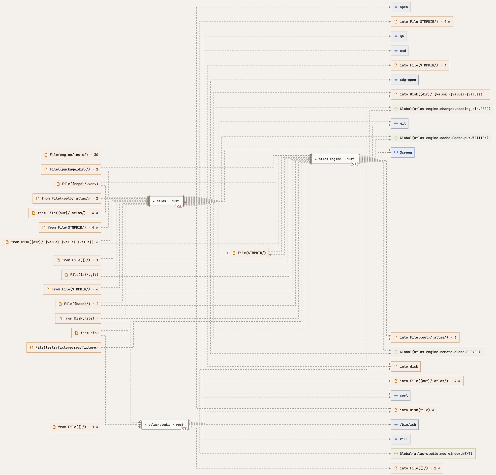
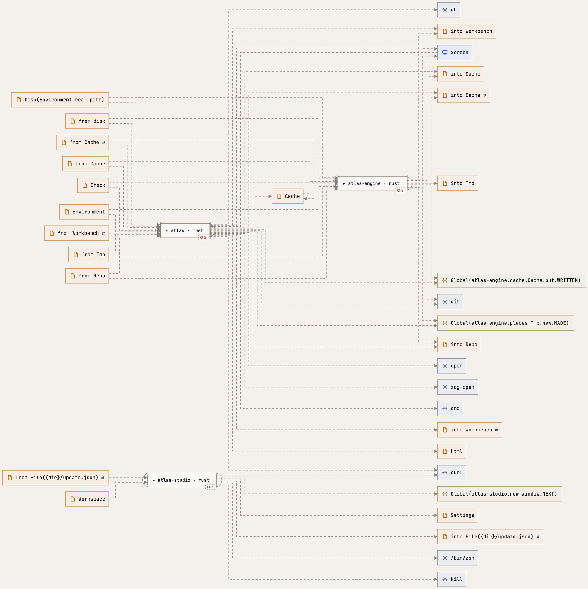
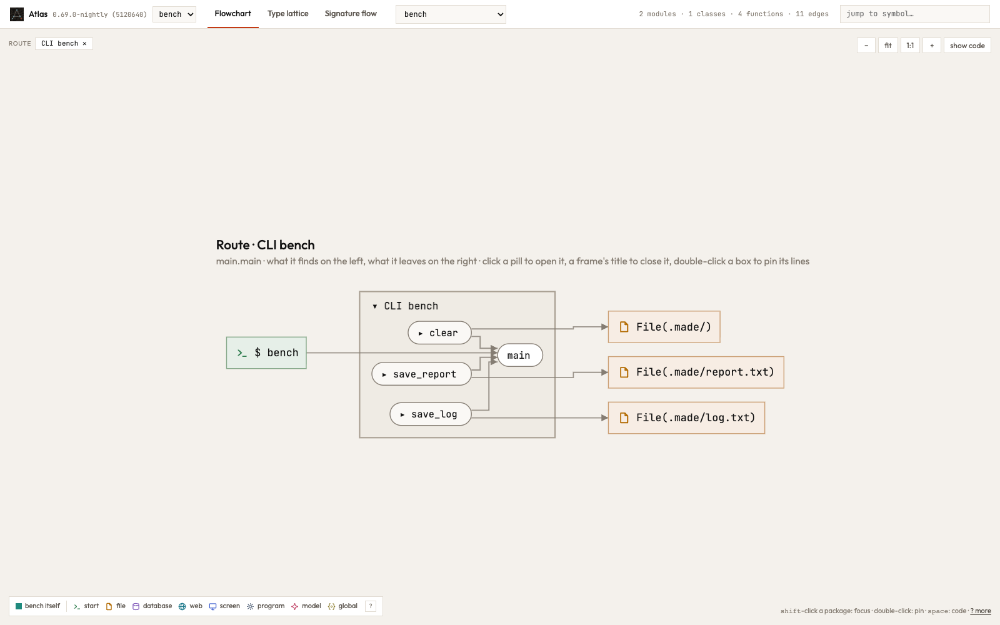
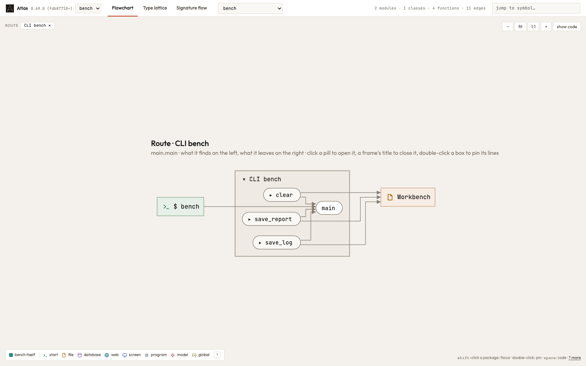
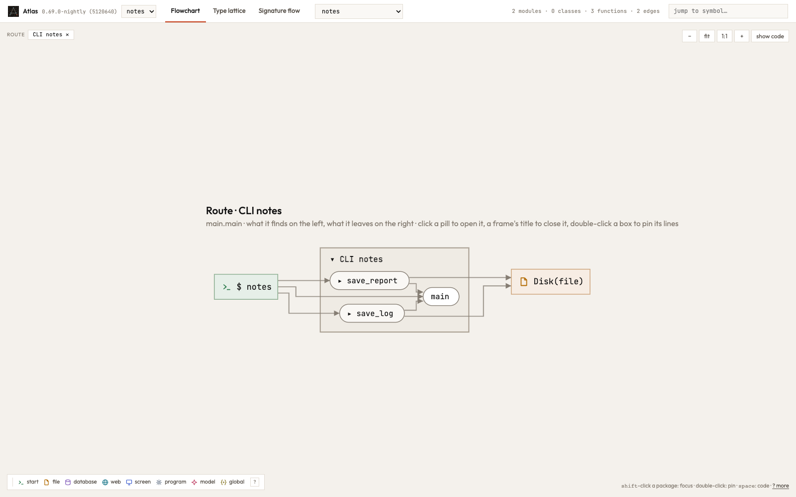
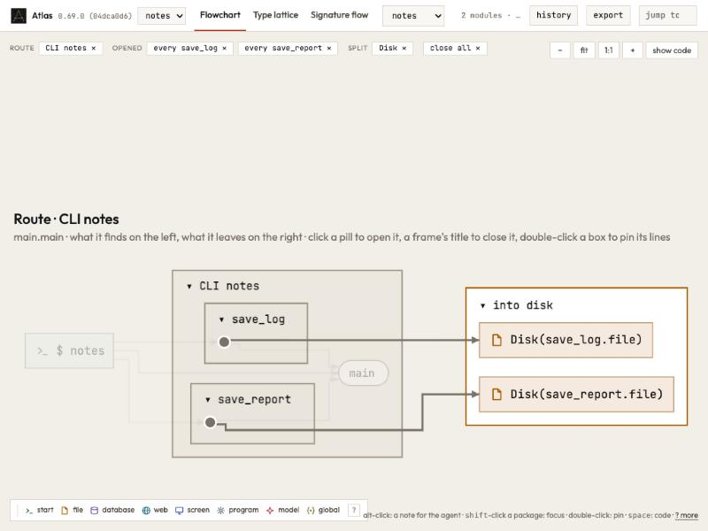

Release 0.69.0
What changed in Atlas 0.69.0
Atlas 0.69 draws where a program keeps its files by what keeps them: a store, a cache, a folder of the project's own is one box that opens into its files. And it names them by what the code says, not by whatever a variable happens to be called.
Where your files are, by what keeps them
A place on disk belongs to the type in your code that keeps it: the one whose value holds the folder (self.root), whose constructor takes the path, or whose method goes to the disk there. Closed, the type is one box, Workbench, Cache, Repo; a click opens it into the files it keeps, and those fold into their folders as before. Files a program hands around as bare paths stand alone: nothing in that code says they belong together. Below, Atlas drawn by itself: thirty boxes named after variables ({out}/.atlas/, {a}/.git, Disk(file)) are now the handful of places Atlas's own code keeps, the repository it reads, the libraries' environment, what it makes beside the repository, what it caches, what it lays out for a moment and the user's settings.


A type's folder, as the code writes it
The same files, kept once through a type (Workbench.of(project).file("report.txt")) and once through bare paths (made_dir(project).join("report.txt")), are the same places in Python, Rust and TypeScript: a path a type's method builds keeps its name. Only the first draws them as one Workbench.


Names that say where
A name a function gives a value is that function's, as its parameters are: two functions that each write a file write two files, not one Disk(file). A message said when a value is missing (expect("has a parent")) never names a place.


Atlas Studio
The terminal docks at the bottom, on the left or on the right, and stays where you put it. Settings name the commit of the build that runs, so you can tell builds apart. And the history follows git: a commit, a push or a fetch shows without a reload.


Faster checks
Atlas's checks of Studio no longer build Atlas on three platforms only to have a file there: a Studio check takes minutes where it took a quarter of an hour.